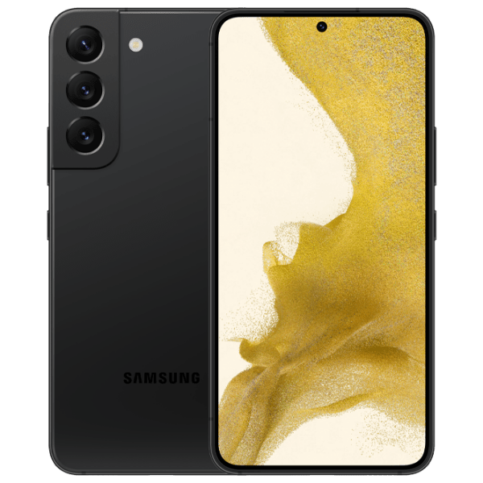
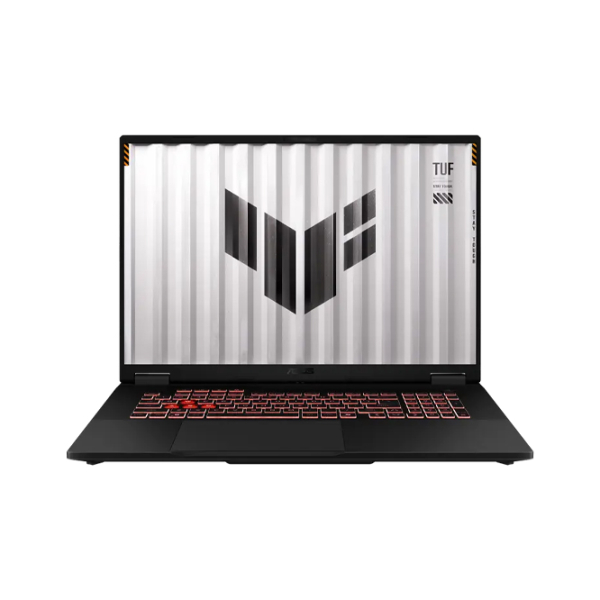
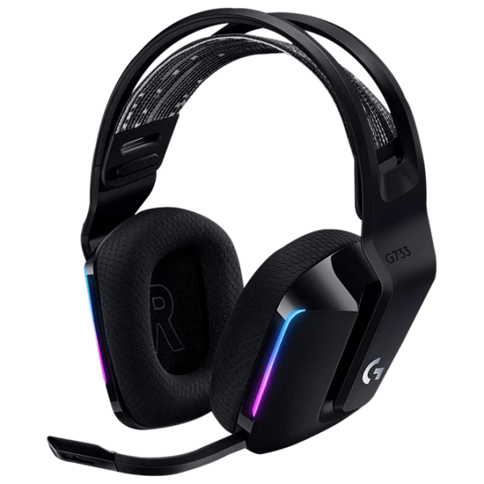
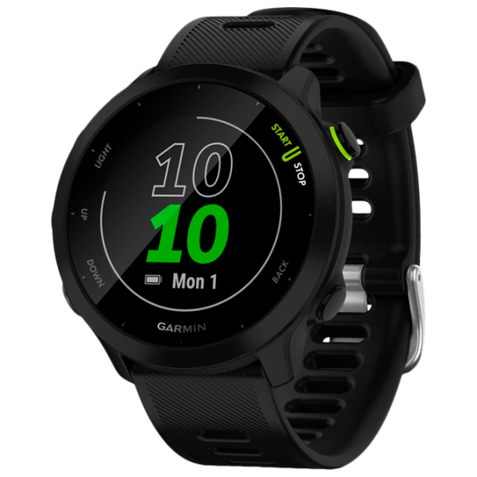

Produse recomandate

Samsung Galaxy S24 Ultra
Un produs nou impenetrabil un scut din titan care încadrează smartphone-ul. Simți întreaga rezistență a titanului.
Vezi site


Apple iPhone 16 Pro Max
smartphone premium cu ecran OLED 6,9″, procesor A18 Pro, cameră triplu 48MP + 12MP, stocare până la 256GB, baterie puternică, design din titaniu și iOS18.
Vezi site
Samsung Galaxy Watch4
Ceas inteligent cu ecran Super AMOLED (~1,2-1,4″), procesor Exynos W920, memorie 1,5GB + 16GB stocare, rulează WearOS Powered by Samsung.
Vezi site
Samsung Galaxy S22
Samsung Galaxy S22 este un smartphone performant, cu design premium, cameră excelentă și procesor rapid, potrivit pentru utilizare zilnică și fotografie de calitate.
Vezi site
Laptop Asus TUF Gaming A18
Asus TUF Gaming A18 este o alegere foarte bună dacă vrei un laptop de gaming puternic, cu ecran foarte mare, memorie rapidă și potențial de upgrade.
Vezi site
Căști Logitech
Logitech G733 Black este o alegere excelentă dacă vrei un headset de gaming wireless, ușor, confortabil și cu autonomie bună.
Vezi site
Ceas inteligent Garmin Forerunner
Este un ceas sport-inteligent ușor (37 g), ideal pentru alergare: are GPS, monitorizare a ritmului cardiac, planuri de antrenament adaptative și autonomie de până la 2 săptămâni.
Vezi site